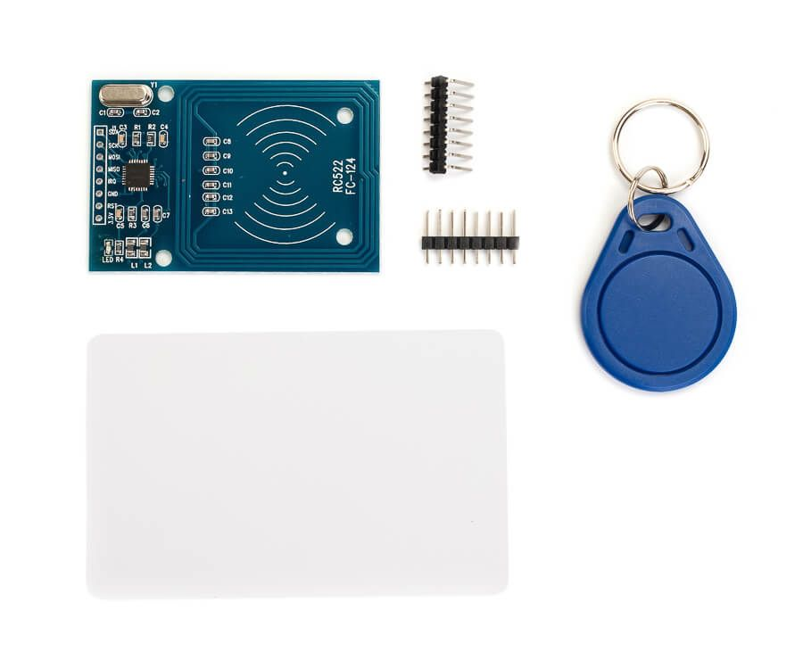
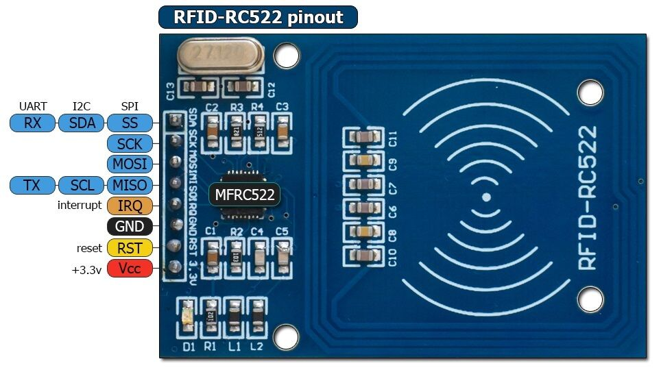
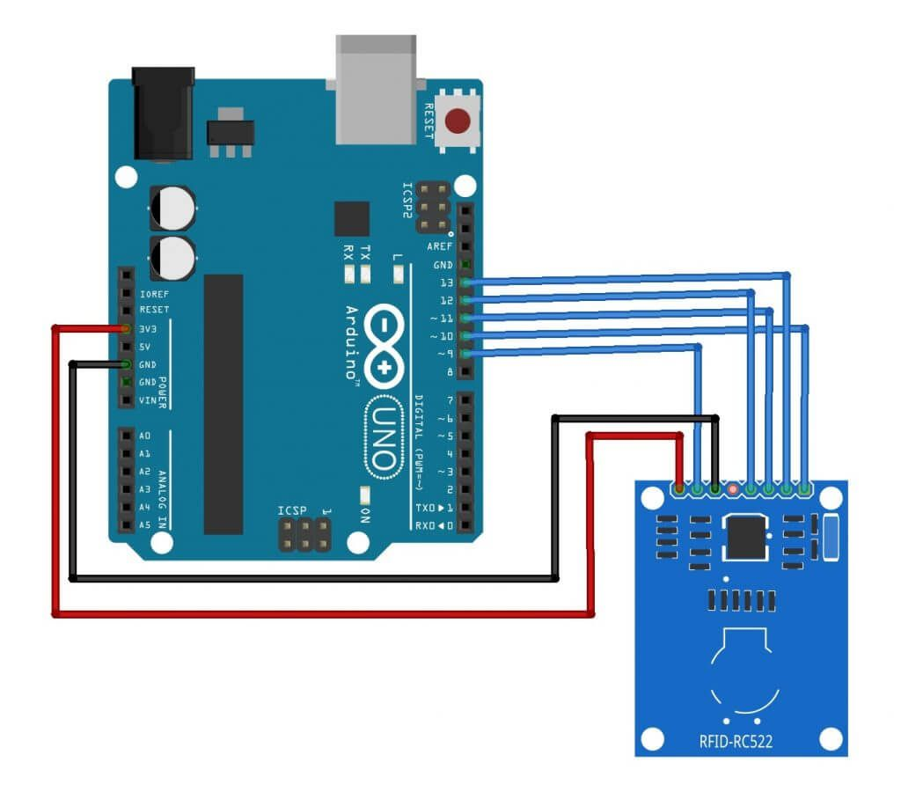
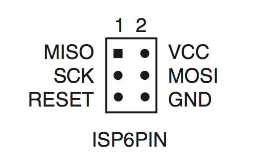
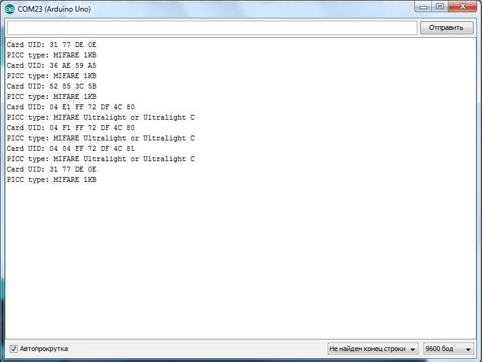
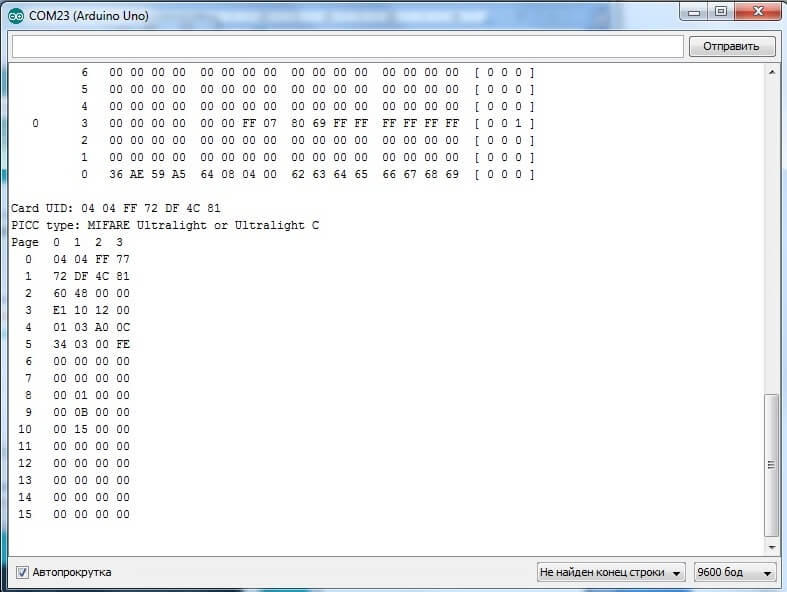
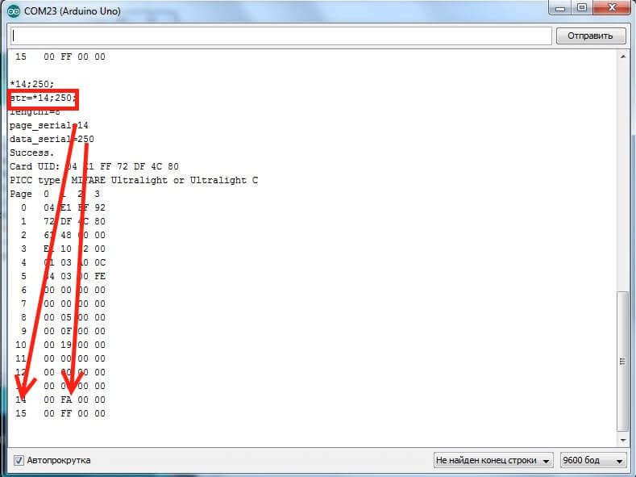

https://3d-diy.ru/wiki/arduino-moduli/rfid-modul-rc522/
Содержание
Радиочастотная идентификация (RFID) — это технология бесконтактной идентификации объектов при помощи радиочастотного канала связи. Идентификация объектов производится по уникальному идентификатору, который имеет каждая электронная метка. Считыватель излучает электромагнитные волны определенной частоты. Метки отправляют в ответ информацию – идентификационный номер, данные памяти и пр.

Рисунок 1. RFID модуль RC522
Преимущества технологии RFID:
Существует большое разнообразие RFID-меток. Метки бывают активные и пассивные (без встроенного источника энергии, питаются от тока, индуцированного в антенне сигналом от ридера). Метки работают на разной частоте: LF (125 - 134 кГц), HF (13.56 МГц), UHF (860 - 960 МГц). Приборы, которые читают информацию с меток и записывают в них данные, называются ридерами (считывателями). В проектах Arduino в качестве считывателя очень часто используют модуль RFID-RC522 (рисунок 1). Модуль выполнен на микросхеме MFRC522 фирмы NXP, которая обеспечивает работу с метками HF (на частоте 13,56 МГц). В комплекте с модулем RFID-RC522 идут две метки, одна в виде карты, другая в виде брелока.
Технические характеристики RFID-модуля RC522
Интерфейсы и назначение выводов
Микросхема MFRC522 поддерживает интерфейсы SPI, UART и I2C (см. рисунок 2). Выбор интерфейса осуществляется установкой логических уровней на определенных выводах микросхемы. На данном модуле выбран интерфейс SPI.

Рисунок 2. RFID модуль RC522 – назначение выводов
Назначение выводов интерфейса SPI:
Сигнал сброса RST – это сигнал, поступающий от цифрового выхода контроллера. При поступлении сигнала LOW происходит перезагрузка считывателя. Также ридер установкой на RST низкого уровня сообщает, что находится в режиме сна, для вывода модуля из режима сна необходимо подать на данный вывод сигнал HIGH.
Подключение модуля к плате Arduino
Рассмотрим подключение модуля к плате Arduino. Нам понадобятся следующие детали:
Подключение модуля RFID-RC522 к плате Arduino по будем производить по схеме соединений на рисунке 3.

Рисунок 3. Схема соединений для подключения RFID модуль RC522 к плате Arduino
На платах Arduino есть разъём ICSP. Он используется для работы по интерфейсу SPI. Назначение контактов разъёма ICSP представлено на рисунке 4. Поэтому можно для соединений использовать контакты разъёма ICSP.

Рисунок 4. Распиновка разъёма ICSP Arduino для интерфейса SPI
Для программирования модуля будем использовать arduino-библиотеку MFRC522, которую можно скачать на github (https://github.com/miguelbalboa/rfid). Загружаем на плату Arduino скетч из листинга 1 для получения типа метки и ее UID (уникального идентификатора). Листинг 1
// Скетч к обзору модуля RFID RC522
// Вывод UID и типа метки
// 3d-diy.ru
// Подключение библиотек
#include <SPI.h>
#include <MFRC522.h>
// контакты
const int reset 9
const int ss 10
// Создание экземпляра объекта MFRC522
MFRC522 rider(reset, ss);
void setup() {
// запуск Serial
Serial.begin(9600);
// запуск SPI
SPI.begin();
// инициализация MFRC522
rider.PCD_Init();
}
void loop() {
// Ожидание
if ( ! rider.PICC_IsNewCardPresent())
return;
// чтение
if ( ! rider.PICC_ReadCardSerial())
return;
// вывод данных
Serial.print("UID=");
view_data(rider.uid.uidByte,rider.uid.size);
Serial.println();
Serial.print("type=");
byte piccType = rider.PICC_GetType(rider.uid.sak);
Serial.print(rider.PICC_GetTypeName(piccType));
Serial.println();
delay(1000);
}
// преобразование в HEX
void view_data (byte *buf, byte size) {
for (byte j = 0; j < size; j++) {
Serial.print(buf [j]);
Serial.print(buf [j], HEX);
}
}
В качестве меток используем брелки и карты, идущие к комплекте с модулем, а также клюющиеся метки Ultrasonic C (рисунок 5).
Рисунок 5. RFID-метки для модуля RFID RC522
После загрузки скетча открываем монитор последовательного порта и видим вывод данных о типе и UID подносимой к считывателю метки (рисунок 6).

Рисунок 6. Вывод данных о типе и UID считываемых с меток
Любопытно посмотреть содержимое памяти метки (дамп памяти). Загрузим на плату Arduino скетч из листинга 2 для чтения и вывода в последовательный порт дампа памяти метки метки. Листинг 2
// Скетч к обзору модуля RFID RC522
// Дамп памяти метки
// 3d-diy.ru
// Подключение библиотек
#include <SPI.h>
#include <MFRC522.h>
// контакты
const int reset 9
const int ss 10
// Создание экземпляра объекта MFRC522
MFRC522 rider(reset, ss);
void setup() {
// запуск Serial
Serial.begin(9600);
// запуск SPI
SPI.begin();
// инициализация MFRC522
rider.PCD_Init();
Serial.println("Start...");
}
void loop() {
// Ожидание
if ( ! rider.PICC_IsNewCardPresent())
return;
// чтение
if ( ! rider.PICC_ReadCardSerial())
return;
// Вывод данных дампа памяти метки
rider.PICC_DumpToSerial(&(rider.uid));
}
void viewData() {
// Версия по для MFRC522
byte v = rider.PCD_ReadRegister(rider.VersionReg);
Serial.print(F("Version Software: 0x"));
Serial.print(v, HEX);
}
И смотрим содержимое памяти для разных меток (рисунок 7). Метка Ultralight C всего 64 байта.

Рисунок 7. Вывод дампа памяти меток
И еще рассмотрим вопрос записи информации на метку. Считывание данных с метки и запись данных на метку производится поблочно. Разные метки имеют разный размер блока. Для Ultralight C размер блока 4 байта. Скетч 3 – запись данных в память метки в первые два байта 15 блока. Получаем данные по последовательному порту и записываем в метку. Затем выводим содержимое блока в последовательный порт. Листинг 3
// Скетч к обзору модуля RFID RC522
// Запись данных на метку Ultralight C
// 3d-diy.ru
// Подключение библиотек
#include <SPI.h>
#include <MFRC522.h>
// контакты
const int reset 9
const int ss 10
// Создание экземпляра объекта MFRC522
MFRC522 rider(reset, ss);
// для последовательного порта
String inStr0 = "";
boolean strComplete0 = false;
unsigned int page_serial;
unsigned int data_serial;
void setup() {
// запуск Serial
Serial.begin(9600);
// запуск SPI
SPI.begin();
// инициализация MFRC522
rider.PCD_Init();
inStr0.reserve(200);
}
void loop() {
//
if (strComplete0) {
Serial.println(inStr0);
if(!parse_string0())
{Serial.print("ERROR1");Serial.println(inStr0);}
else {
page_serial=max(min(15,page_serial),7);
data_serial=min(1000,data_serial);
}
// очистить строку
inStr0 = "";
strComplete0 = false;
}
// Ожидание метки:
if (rider.PICC_IsNewCardPresent()) {
// чтение карты
if (rider.PICC_ReadCardSerial()) {
if(data_serial>0 && page_serial>0) {
byte buf[] = {0, 0, 0, 0};
buf[0]=highByte(data_serial);
buf[1]=lowByte(data_serial);
//Запись на карту на страницы 8,9 или 10 - 4 байта
Serial.println(rider.GetStatusCodeName(
rider.MIFARE_Ultralight_Write(page_serial, buf, 4)));
// Вывод дампа данных
rider.PICC_DumpToSerial(&(rider.uid));
}
}
}
delay(2000);
}
// SerialEvent
void serialEvent() {
while (Serial.available()) {
// получить очередной байт:
char data = (char)Serial.read();
// /n - конец передачи
if (data == '#')
strComplete0 = true;
else
// добавить в строку
inStr0 += data;
}
}
// парсинг строки последовательного порта Serial
boolean parse_string0() {
int s1,s2;
int length1= inStr0.length();
if(inStr0.charAt(0)!='*')
return false;
if(inStr0.charAt(length1-1)!=';')
return false;
//
for(int i=1;i<length1;i++)
{if(inStr0.charAt(i)==';')
{s1=i;break;}
}
page_serial= inStr0.substring(1,s1).toInt();
// action
for(int i=s1+1;i<length1;i++)
{if(inStr0.charAt(i)==';')
{s2=i;break;}
}
data_serial= inStr0.substring(s1+1,s2).toInt();
return true;
}
И смотрим запись на карту данных из последовательного порта (рисунок 8).

Рисунок 8. Вывод дампа памяти меток
�